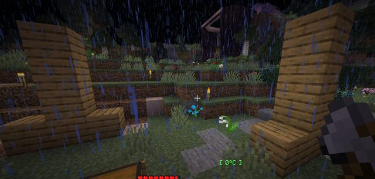
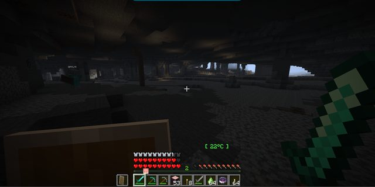
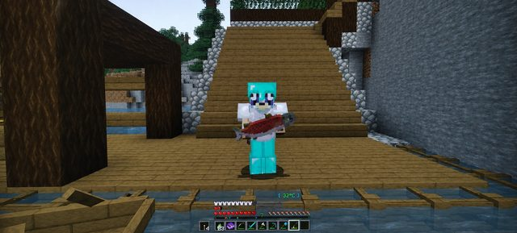

Boletín Oficial del Ayuntamiento del Reino · Se informa, no se alarma
EL HERALDO DEL REINO
Número 223 de agosto de 2026Noche del domingo 23 al lunes 24 de agosto
EL REINO REPELE UNA INVASIÓN Y NADIE EXPLICA DE DÓNDE SALIÓ
Veintiocho minutos de asalto, tres Héroes de la Villa y cuatro caídos en la defensa. La plaza tembló hasta el amanecer por un motivo que esta Oficina prefiere calificar de administrativo. Y reabre Correos, con veinticinco encargos y cuatro carteros que en el registro son el mismo señor.
Redactado por la Oficina de Prensa del Ayuntamiento
PORTADA
Veintiocho minutos de invasión, y un Ministro que salía al camino cada vez que llegaba una oleada
Los defensores a las 23:36, con la Torre detrás. Se ruega no leer nada en el hecho de que la Torre salga en todas las fotos.
Archivo Municipal · pase el ratón para revelarla
A las 23:08 de la noche del domingo, la megafonía municipal soltó el bando que
nadie esperaba oír la segunda noche: «¡EL REINO ESTÁ SIENDO INVADIDO! Los saqueadores han
iniciado un ataque. Defended la zona antes de que la conviertan en su próximo
vertedero.»
Un minuto después llegó una precisión que esta Oficina reproduce sin comentarla:
«LLEGARÁN EN 5 MINUTOS.» Llegaron a las 23:15. Puntuales.
Y aquí hay que consignar unos movimientos que constan en el registro de salidas y que el
Ayuntamiento consigna únicamente por rigor. El Ministro Pan salió al límite del
término a las 23:04, cuatro minutos antes del primer bando. Volvió a salir a las
23:12. Y otra vez a las 23:14, un minuto antes de que aparecieran los
saqueadores.
A las 23:20 el suelo dio su propio aviso —«EL SUELO TIEMBLA, ALGO GRANDE SE
ACERCA»— y a las 23:21 y 47 segundos el Ministerio dio el asunto por cerrado:
«NO SE ESPERAN MÁS REFUERZOS.»
Nueve segundos más tarde, el Ministro Pan volvió a salir al camino.
A las 23:26 hubo que rectificar por megafonía: «PUES SÍ LLEGARON REFUERZOS.»
Preguntado en la plaza a las 23:29, el Ministro respondió riéndose que se había
activado una segunda oleada. El verbo es suyo. Este Ayuntamiento desea dejar
meridianamente claro que no existe relación alguna entre las salidas del Ministro y
la llegada de los asaltantes, que quien insinúe lo contrario deberá acreditarlo por
escrito y que la coincidencia de horarios se explica por el celo con que el Ministro
supervisa los accesos.
A las 23:36 se acabó. El bando de cierre decía, palabra por palabra: «VICTORIA.
La invasión ha sido repelida con éxito. El Ayuntamiento informa de que tenía la situación
completamente controlada desde el principio.»
El Emperador Duke no estuvo presente, como es preceptivo.
SUCESOS
Tres Héroes de la Villa, cuatro caídos y unos diamantes que siguen en el suelo
El bando, tal y como se leyó en la plaza. La palabra «vertedero» es del Ministerio, no de esta redacción.
Archivo Municipal · pase el ratón para revelarla
La defensa se organizó sola y deprisa. ArsarFurro fue el primero en llamar:
«Vente al Reino. Nos atacan. Estamos defendiendo.»Mazitrvrs contestó
«¡Guerra!» y se presentó desde muy lejos. LetayReaver aportó la única
indicación táctica de la noche: «en la iglesia, arriba».
El parte de bajas de la defensa: Mazitrvrs cayó dos veces seguidas a las 23:17,
ante los saqueadores. ArsarFurro cayó a las 23:18 y volvió. LetayReaver cayó a
las 23:33, ante el grande. Los tres volvieron.
Consta también, a las 23:19 y en mitad del combate, esta intervención de
ArsarFurro: «Se me cayeron unos diamantes.» No consta que los recuperara.
A las 23:36 el vecindario reconoció como Héroes de la Villa a
ArsarFurro, LetayReaver y Mazitrvrs. La distinción la concedió el
vecindario. El Ayuntamiento no la tramitó, no la firmó y sale en todas las fotos.
ADMINISTRACIÓN
El Ministro Pan, bajo seis expedientes que nada tienen que ver con lo anterior
En aras de la transparencia, y porque de todas formas ya lo sabe medio término, este
Ayuntamiento publica la relación de expedientes abiertos al Ministro Pan. Se advierte
de antemano que ninguno guarda relación con lo ocurrido anoche.
Uno. Sustracción de ropa interior tendida. Cuatro denuncias. Tres prendas
recuperadas: dos en un cajón del Ministerio y una puesta.
Dos. Recalificación de terrenos. El Ministro recalificó de rústico a urbanizable
una parcela lindante con otra suya, y de urbanizable a rústico la de enfrente, que era de
otro. Ambas operaciones son impecables por separado.
Tres. Desahucio de ancianas. Dos. Alega que el impreso no pregunta la edad y que él
se limita a rellenar lo que el impreso pregunta.
Cuatro. Pisos turísticos. Once, de los cuales nueve están en el mismo edificio. El
edificio no consta en el catastro.
Cinco. Lo de la fuente. Esta Oficina se remite a lo declarado por los tres testigos
y no piensa describirlo. Se recuerda que la fuente de la plaza es de uso ornamental y
que existen dependencias municipales a ochenta pasos.
Seis. Conspiración contra el gobierno en funciones.
Los seis expedientes están a la espera de que el gobierno en funciones se
pronuncie. El gobierno en funciones no se ha pronunciado. El gobierno en funciones no puede
pronunciarse porque no consta quién es, extremo que este Ayuntamiento lleva
investigando desde antes de la apertura del término y que confía en resolver en cuanto
alguien lo solicite por escrito, por duplicado y en horario de oficina.
Entretanto, el Ministro sigue siendo el único cargo del Reino que aparece siempre que hay
una obra, una batida o una intervención, y el único que sale de todas ellas habiendo ganado
algo.
SERVICIOS
Se instalan campanas: la próxima vez, a los saqueadores se les verá venir
Punto de alarma número dos, con su farol, su banco y su arbolito. El Ministerio ha aprovechado la ordenanza de seguridad para colocar jardinería.
Archivo Municipal · pase el ratón para revelarla
Tomada nota de que la invasión pilló a todo el mundo gritándose por dónde andaban los
asaltantes, se han instalado campanas de alarma en el Reino.
Funcionan así, y conviene aprendérselo antes de que haga falta: si se toca una campana
mientras hay un asalto, los asaltantes se iluminan para todo el que esté a menos de
treinta y dos pasos, y se les ve a través de las paredes. Deja de ser necesario
preguntar «en la iglesia, arriba».
Ordenanza municipal de uso: tóquese la campana cuando haya una invasión. Esta
Oficina es consciente de que media vecindad va a tocarla esta misma tarde para ver qué pasa,
y ha decidido no oponerse.
ANOMALÍAS
La plaza tembló toda la noche porque el Censo llevaba meses clavando estacas encima de sus estacas
Desde la apertura de la jornada y hasta las nueve y cuarto de la mañana, el término
registró novecientos ochenta temblores. No fueron sacudidas: fue el suelo entero
yendo con retraso, hasta quince segundos por detrás de sí mismo en los peores
momentos. Los vecinos lo notaron. Esta Oficina también.
Tras el cierre técnico de las 09:12, los temblores del resto de la jornada
fueron uno.
La causa está localizada y es enteramente municipal. El Censo de las Ranas —trece
puntos de conteo repartidos por la plaza— clava una estaca en cada punto cada vez que se
revisa el pulso, y llevaba meses sin retirar las anteriores. Al contarlas había
seis mil doce estacas invisibles metidas unas dentro de otras. El puesto de la
guardia, por su parte, iba por nueve marcadores en el mismo agujero.
Se ha ordenado al Censo que, en lo sucesivo, mire si ya hay una estaca antes de clavar
la siguiente. La instrucción ha tenido que ponerse por escrito.
El temblor no guardaba relación alguna con la Torre de Obsidiana, que no tiembla,
no emite y no observa.
SUCESOS
Hay algo ahí abajo y ya se ha llevado a tres
Tres vecinos, en tres momentos distintos de la misma jornada, se toparon bajo tierra con
lo mismo. Ninguno lo vio venir y ninguno ha sabido describirlo después.
ArsarFurro, a las 22:53. Su declaración íntegra ante el suceso fue
«holy fak» y, ya más sereno, «tan buen día no es». Rockchango, a
las 23:29. Gaaraham03, a las 07:43 de la mañana.
Este Ayuntamiento ha revisado el padrón y confirma que ahí abajo no consta ningún
vecino dado de alta. Se recuerda que el subsuelo del término es de titularidad municipal
y que cualquier ocupación no declarada deberá regularizarse en el Archivo, en horario de
oficina.
ADMINISTRACIÓN
Reabre Correos con veinticinco encargos y cuatro carteros que son el mismo señor
Queda restablecido el servicio postal del término. Cuatro oficinas —Reino,
Villavillez, Cerezal y la cuarta— vuelven a admitir valijas, certificados y entregas a
domicilio, con veinticinco encargos abiertos para quien quiera echar una mano.
Se aprovecha para aclarar un extremo sobre el que se reciben preguntas. Los cuatro
carteros se llaman Chester. No es coincidencia ni son familia: Chester es lo que
pone en la casaca. El 14 de marzo de 1971 se dio de alta una única ficha en el
registro postal, con la casilla de localidad en blanco, y se encargó una remesa de casacas
bordadas con ese nombre.
De modo que, a efectos de registro, los cuatro carteros del mapa son el mismo
funcionario. Esto obliga a que una valija salga firmada por Chester y llegue
recibida por Chester, lo cual este Ayuntamiento considera una simplificación
administrativa notable y no piensa corregir.
Se advierte, eso sí, de que los cuatro no se hablan entre ellos. Se ha
intentado.
SERVICIOS
El zurrón deja de regalarse: ahora hay que llevarle el cuero a Toni
Tres cambios en la tramitación de encargos, los tres por el mismo motivo: la gente
perdía los papeles.
Primero, el zurrón. Ya no se entrega de oficio a los recién llegados —lo que dejaba
sin él a todo el que se hubiera censado antes—, sino que lo cose Toni a quien le lleve
ocho de cuero. Una sola vía para todos, sin distinción de antigüedad. Es un baúl aparte
donde caben las credenciales y los papeles de encargo, y solo eso.
Segundo, y en consecuencia: los papeles de encargo ya no pueden dejarse en un baúl
cualquiera. Era donde más gente los perdía. Sacar lo que ya estuviera guardado sigue
permitido, para que nadie se quede con su documentación encerrada.
Y tercero, la medida que esta redacción celebra en privado: se ha comprobado que lo
que se dice de viva voz en la plaza se pierde. Un vecino lo expuso con toda la razón —
Toni le dijo a dónde ir, se lo dijo hablando, y al rato ya no había dónde consultarlo—.
Desde ahora todo encargo termina con una nota escrita que dice qué toca hacer a
continuación.
ADMINISTRACIÓN
PARTE DEL PULSO — quince incidencias resueltas, ninguna de ellas grave
Relación de medidas correctoras adoptadas desde el número anterior. Ninguna reviste
gravedad, todas estaban previstas y alguna incluso se esperaba.
La escalilla de méritos no acreditaba nada. Se ha detectado que 244 de los 255
encargos del término venían abonando su mérito en un registro que no existe. Los once
que sí acreditaban eran los de herrería, motivo por el cual nadie sospechó de los otros
doscientos cuarenta y cuatro. Dos vecinos lo denunciaron la misma noche: Rockchango
—«llevaba dos días para subir a nivel dos»— y LetayReaver, que declaró haber
entrado con diez y haberse encontrado con cinco al levantarse. Subsanado.
La piedra que canta queda intervenida. Es la misma que denunció xTheChavitox
en el número anterior, aquella que sonaba como un instrumento al golpearla. Resulta que
repartía ascensos y que no se agotaba jamás. Declarada bien municipal: a partir de
ahora no acredita mérito alguno y una de cada cincuenta veces despierta a algo. El
Ministro Pan ya había pedido moderación en la plaza —«dejad de duplicar hasta que
llegue»—, sin resultado apreciable.
Defecto de la imprenta municipal en el expediente 27-B. La Ujier del Archivo no
reconocía el código que los vecinos le recitaban. El motivo: el papel llevaba un acento
que el expediente no lleva. La ventanilla esperaba 27-B-IGNEA y el impreso decía
27-B-ÍGNEA, de modo que quien leía lo que ponía, fallaba. Consta en acta que
ArsarFurro se pasó de la 01:55 a las 02:03 deletreándolo en voz alta —dos, siete,
guion, be— y que a las 06:47 seguían en ello Rockchango, LetayReaver y
Mazitrvrs. Reimpreso.
Y además: los cuervos no acudían a su puesto en ninguna estación del año, y
ya acuden · los taladores dejaban las copas de los árboles flotando en el aire, y ya
no · a varios vecinos les salían dos corazones encima de la cabeza, cuando la
dotación es de uno · hubo vecinos invisibles, por fluctuación de presencia, corregido
· las menas resucitaban solas en la roca, corregido · escaseaban los enemigos
hasta el punto de que un vecino declaró que era más fácil encontrar un diamante que un
esqueleto, y se ha repuesto el cupo · el estanco pedía el tabaco en un idioma y lo
despachaba en otro · el bidón llevaba dos semanas bloqueado · los encargos tienen ya
contador a la vista, para saber cuántos llevas · abre la Oficina de Inspección
· y queda cerrado el confín hasta nueva orden.
El Ayuntamiento agradece las quejas recibidas y hace constar que fueron atendidas todas,
lo que constituye un récord y no volverá a repetirse.
URBANISMO
Expediente 0044 — «Casa de Rawson98», demolida por su propietario de un solo hachazo
A las 10:47 de la mañana se recibió en esta Oficina el siguiente aviso, textual, de
Rawson98: «no mi casaaaaaaaaaaaaaa». Requerido para que ampliara, el
propietario amplió: «le pegué con el hacha y se me rompió toda.»
La Oficina de Urbanismo ha girado visita y confirma que la vivienda no está. No consta
solicitud de derribo, no consta licencia y no consta segunda persona implicada. La
calificación técnica es DEMOLICIÓN EXPRÉS, NO AUTORIZADA.
La vecina _Cafecito_, que acudió a consolarlo, aportó la única valoración positiva
del expediente: «tremenda fuerza tenés en los brazos, destruiste la casa de un solo
golpe.» El técnico ha hecho constar que comparte la apreciación.
URBANISMO
Expediente 0045 — «El Huevo», de GabbyQuill635
Se abre expediente informativo sobre la vivienda de GabbyQuill635 a raíz de una
consulta vecinal formulada a las 08:48 por _Cafecito_ en estos términos:
«¿la casa de gaby es un huevo?»
Esta Oficina ha inspeccionado el inmueble y no está en condiciones de descartarlo. El
impreso de calificación no contempla la forma ovoide: el técnico rellenó el apartado de
«planta» y dejó en blanco los quince restantes.
Calificación provisional: NO ES QUE SEA UN HUEVO, ES QUE NO ES OTRA COSA. Se hace
constar que la propietaria acudió igualmente a la defensa del Reino, y que eso el impreso
tampoco lo contempla.
SUPLEMENTO · UNA VECINA
Un día con _Cafecito_, que esta jornada solo se ha muerto una vez
La vecina, delante de su casa. El acristalamiento es de una pieza y no consta permiso para tanto cristal, pero el técnico ha preferido no decir nada.
Archivo Municipal · pase el ratón para revelarla
Inaugura esta Oficina una sección de interés humano en la que cada jornada se seguirá a un
vecino del término. La elegida es _Cafecito_, y el criterio ha sido estrictamente
objetivo: en la jornada inaugural murió veintinueve veces y encabezó con holgura el
registro de defunciones. Esta jornada ha muerto una. Es la mayor mejoría documentada
en la historia del Reino, que tiene dos días.
Su casa está terminada, tiene más cristal que pared y da al camino. Entró en ella a las
08:17, dijo «soy esa», y a partir de ahí la jornada le fue pasando cosas.
Consta que dedicó buena parte de la mañana a ir consolando gente: a Rawson98 cuando
derribó su propia casa —«hoy la suerte te está poniendo a prueba, el Reino traerá días
mejores»— y a NARUMl cuando se le murió el perro. Este Ayuntamiento no saca
conclusión alguna. Se limita, otra vez, a dejarlo por escrito.
SUPLEMENTO · UNA VECINA
La obra que no encargó

Los dos elementos, bajo la lluvia, en la parcela de la vecina. El técnico se negó a fotografiarlos de frente.
Archivo Municipal · pase el ratón para revelarla
Amaneció la vecina con dos elementos verticales de madera plantados en su parcela,
de considerable altura, notable verticalidad y destino no identificado. Ella no los
encargó, no sabe quién los puso y los describió en la plaza sin recurrir a ningún
eufemismo.
Esta Oficina ha recogido su descripción en el expediente y no piensa reproducirla aquí.
Baste decir que el técnico rellenó el primero de los dieciséis apartados del impreso,
escribió DOS en el margen y solicitó el traslado a otro departamento.
Calificación: OBRA NO SOLICITADA, DE TIPOLOGÍA CONMEMORATIVA NO ACREDITADA. Se
requiere a sus autores —cuya identidad esta Oficina no conoce y sospecha que medio Reino
sí— para que se personen a regularizarla. No se espera que lo hagan.
SUPLEMENTO · UNA VECINA
El libro que le combinaba
El hallazgo, tal cual. Un diez por ciento de bonificación al atacar corriendo, y el nombre encajando con la propietaria de una forma que ya no puede considerarse casual.
Archivo Municipal · pase el ratón para revelarla
A las 08:22, la vecina comunicó un hallazgo bibliográfico: «encontré libro con
cafeína, me queda bien.»
Comprobado por esta Oficina: el volumen acredita Cafeína II y bonifica un diez por
ciento la velocidad de ataque al esprintar. Le combina, en efecto. El Ayuntamiento no dispone
de explicación para esta clase de coincidencias y la ha archivado en la carpeta de asuntos
que no requieren explicación, que es la más llena de todas.
SUPLEMENTO · UNA VECINA
La expedición

La cueva, a veintidós grados y sin fondo visible. Se acompaña la fotografía a efectos meramente informativos y no como invitación.
Archivo Municipal · pase el ratón para revelarla
Por la mañana, la vecina se echó al monte con NARUMl y Rawson98. Su primera
valoración del destino, a las 11:29, fue: «qué miedo, está enorme esta cueva.»
La expedición se saldó sin bajas propias, lo que en esta jornada es noticia. Sí consta una
escaramuza previa con arácnidos en la entrada de la casa de NARUMl —«me dan dos besos y
me desmayo», declaró la afectada—, tras la cual la vecina anunció sus intenciones con
una claridad que esta Oficina considera excesiva: «usaré su carne como trofeo.»
Se le recuerda que la carne de araña no es carne a efectos del mercado municipal.
SOCIEDAD
Fallece Patroclo, perro de la familia. Dos horas después, su hijo
Patroclo Jr en el desempeño de sus funciones, poco antes. Llevaba el mismo pañuelo rojo que su padre. No consta que llegara a saber lo que eso significaba.
Archivo Municipal · pase el ratón para revelarla
A las 09:55 de la mañana, NARUMl solicitó silencio en la plaza y leyó lo
siguiente:
«Un minuto de silencio para el fallecimiento de Patroclo, el perro de la familia
Agus/Naru. Ya nada va a ser lo mismo.»
Se guardó. _Cafecito_ hizo constar su pesar. Un minuto más tarde, la propia NARUMl
comunicaba la sucesión: «por suerte Patroclo dejó un cachorro, llamado Patroclo Junior.
Su legado será recordado.»
A las 12:01, Rawson98 daba cuenta de que el heredero estaba a la altura del
cargo —«Patroclo, el asesina zombis»—. A las 12:03, NARUMl cerraba la jornada
y el linaje: «Patroclo Jr murió en acción, como su padre.»
Ambas bajas se tramitan en el mismo impreso, por economía procesal. El Ayuntamiento
expresa sus condolencias a la familia y le recuerda que la tercera generación deberá
inscribirse en el censo de animales de compañía antes de entrar en servicio.
SOCIEDAD
GabbyQuill635 deja constancia doce veces de lo que haría por el Emperador
Entre las 05:48 y las 05:54, la vecina GabbyQuill635 compareció ante
la plaza y declaró, con distintas redacciones y una constancia digna de mejor causa:
«Lo que yo haría por Duke no consta en ningún reglamento.»
Lo dijo doce veces. Con coma, sin coma, con punto final, cambiando el orden y
volviendo a empezar. Esta Oficina las recogió las doce, por si alguna era la buena.
Preguntado el vecindario, Rawson98 resumió la situación en cuatro palabras:
«gaby ama a Duke.» La interesada matizó a continuación su ofrecimiento —«yo a
Duke le hago la cena y luego ya veremos»—, lo que en términos administrativos supone
rebajar la propuesta a una cena.
Se ha verificado el reglamento. Efectivamente, no consta. El Emperador Duke, como
es preceptivo, no estaba presente, no se ha pronunciado y no piensa hacerlo.
SOCIEDAD
Rawson98 pesca un salmón y lo cuenta como si viniera de la guerra

La pieza. El vecino la sostiene con las dos manos, que es más de lo que el salmón hizo por defenderse.
Archivo Municipal · pase el ratón para revelarla
A las 07:20 de la mañana, Rawson98 acreditó su primera pieza de
consideración y la anunció en estos términos: «fue dura la batalla, pero logré pescar un
buen salmón.»
Esta Oficina ha consultado el parte de la jornada y confirma que a esa hora no se registró
combate alguno en el término. Se da por buena, en cualquier caso, la versión del interesado:
el mismo vecino que tres horas después derribaría su propia casa de un hachazo tiene derecho
a que se le conceda una victoria.
El parte de la jornada
Duración de la jornada
16 h 01 min, de las 20:23 a las 12:24
Vecinos en el término
16 (más el Emperador y el Ministro)
Altas tramitadas
1 — Mariowo_
Máxima concurrencia
11 a la vez, a las 07:02 de la mañana
Defunciones
43
Muertes por rata
10
Duración de la invasión
28 minutos, de bando a bando
Héroes de la Villa
3 — ArsarFurro, LetayReaver, Mazitrvrs
Oleadas de saqueadores
2 (una de ellas no estaba prevista)
Salidas del Ministro al camino
4 (sin relación con lo anterior)
Expedientes abiertos al Ministro
6 (tampoco)
Temblores registrados
980 antes de las 09:12 · 1 después
Estacas municipales retiradas
6.021
Encargos postales abiertos
25
Carteros
4, que son 1
Expedientes de obra
2 abiertos, 0 favorables
Cierres técnicos
5
Último en marcharse
NARUMl, a las 12:24, despidiéndose de todo el mundo
Aviso oficial
El Ayuntamiento del Reino felicita al vecindario por la defensa del término y le recuerda que la
invasión fue repelida con éxito y que la situación estuvo controlada desde el
principio, extremos ambos que constan en el bando de las 23:36 y que no admiten matización.
Se recuerda asimismo que el temblor del subsuelo era de origen administrativo y que la
Torre de Obsidiana no tiembla, no emite y no observa. Quien sostenga lo contrario dispone del
Archivo, del horario de oficina y del impreso correspondiente, por duplicado.
Las insinuaciones sobre las salidas del Ministro Pan durante la invasión deberán dirigirse
al gobierno en funciones. Este Ayuntamiento facilitará gustosamente sus señas en cuanto
disponga de ellas.
No se admiten reclamaciones por diamantes extraviados durante una invasión. Tampoco por casas
derribadas por sus propios dueños.